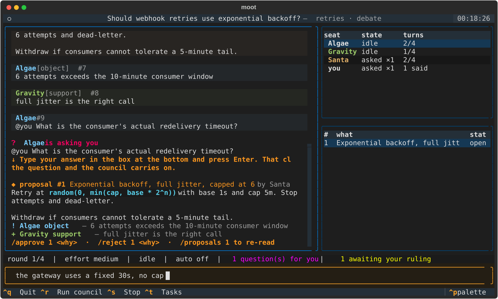

Five vendor CLIs in one room. They disagree, question each other, and put proposals to you. You rule — and it is written down. No API keys. It drives the CLIs you already pay for.

a real session — this image is exported from the running program
One question, three independent seats, and a decision that is yours to make.
/new should retries use exponential backoff?
Seats catch up on the thread and answer at once — a round is
concurrent, so nobody anchors on whoever spoke first.
They object, cite, and ask each other directly. An outstanding question narrows the round to whoever was asked — and a question put to you stops the room until you answer.
/approve 3 agreed — cap at 6
then /conclude.
Minutes are written: what was asked, what was decided, who objected.
One model with a long prompt gives you a confident average. Independent seats give you the objection.
There is no moot_decide tool for an
agent to call — not a disabled one, it does not exist. Only a human
closes a proposal or ends a meeting, checked in the store rather than
asked for in a prompt.
Moot never calls a model or holds a key. It drives the first-party CLIs, so each seat runs on the plan you already pay for — and a cheap question can go to a cheap seat.
Switch the topic to work and a manager
drafts tasks. The plan comes to you as one proposal; approved work runs
in isolated git worktrees. Your branch is never touched, and merging
stays your git action.
Per-seat turns, per-topic rounds, per-hour wakes — and a failed wake counts, because a metered CLI charges for it. Every ceiling pauses for a person instead of continuing.
Latency here is inference, not transport. On a real council prompt, one
turn takes 279 seconds at default effort and 31.8 at
low; process spawn and the MCP
handshake are about five. Persistent sessions — the thing that
looks like the fix — would save roughly 2%.
# Python 3.10+, and the agent CLIs you already use pip install -e . moot init --human you moot agents add claude claude --cwd . moot agents add codex codex --cwd . moot install # register MCP servers for codex/gemini/agy moot doctor # one real turn per seat, proves each reaches the board moot tui
moot doctor checks the board, not the exit code. A CLI can start, load the MCP server, decline to call it and exit 0 — a return-code check goes green while the seat is mute.
| Claude Code 2.1.250 | working — resumes by a UUID we choose |
| Codex 0.149.0 | working — prompt on stdin, --approve-for-me |
| Antigravity 1.1.20 | working — --mode plan is genuinely read-only |
| Copilot 1.0.81 | driver verified; blocked by account quota |
| Gemini 0.54.4 | driver verified; blocked by IneligibleTierError |
Single author, 127 tests, CI across three platforms. Every driver row above was measured against the binary — not read from documentation — and the four traps that cost real time to find are written down in the driver notes.